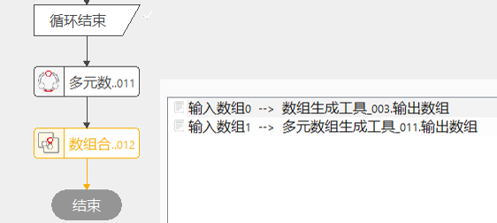

数组合并工具可以用来将多组相同类型的独立的数组，进行合并，生成一个新的数组；可用于多个数组生成工具的执行结果进行组和起来。
数组生成工具结果拼合；任意相同类型的集合数组的组合。
类型相同的多数组整合成一个数组。

| 参数名称 | 参数说明 |
|---|---|
| 数据类型 | 选择生成数组的数据类型，根据实际使用情况选择对应的数据类型。 |
| 数组个数 | 数据链关联的数组个数。数组0到数据5，最多可合并6个。 |
| 参数名称 | 参数说明 |
|---|---|
| 输出数组 | 同类型数据合并后的新数组。 |
| 执行结果 | 工具执行结果。 |
| 执行时间 | 工具执行时间。 |
参见“\Samples\数组合并工具.gvp”。